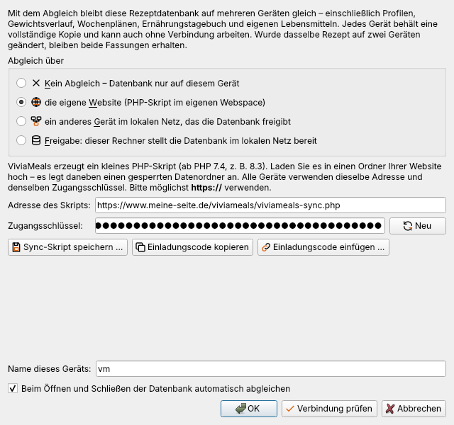
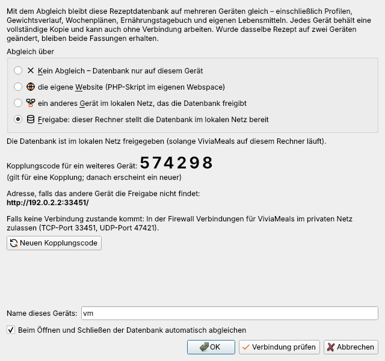
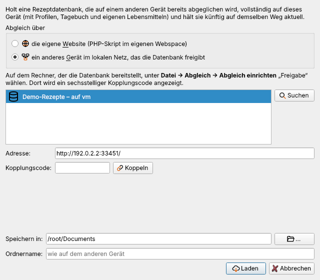

Abgleich zwischen Geräten
Mit dem Abgleich bleibt eine Rezeptdatenbank auf mehreren Geräten gleich – etwa auf dem Rechner in der Küche und dem Laptop. Abgeglichen werden Rezepte, gespeicherte Menüs, Profile mit Gewichtsverlauf und Wochenplänen, das Ernährungstagebuch, eigene Lebensmittel, Doubletten-Ausnahmen sowie die Standard-Quelle und die Liste der „Kein Lebensmittel“-Zutaten.
Jedes Gerät behält eine vollständige Kopie und kann auch ohne Verbindung arbeiten; beim nächsten Abgleich werden nur die geänderten Dateien übertragen. Nicht abgeglichen werden Dinge, die zum jeweiligen Gerät gehören: Fenstergrößen, Darstellung, Scanner- und Tesseract-Einstellungen, der DeepL-Schlüssel, der Kühlschrank-Bestand und Sicherungskopien.
Alle Befehle stehen unter Datei → Abgleich.
Zwei Wege
Über die eigene Website
Sie brauchen Webspace mit PHP (Version 7.4 oder neuer, z. B. 8.3) – bei den meisten Hostern selbstverständlich.

- Datei → Abgleich → Abgleich einrichten … öffnen und „die eigene Website“ wählen.
- Neu erzeugt einen zufälligen Zugangsschlüssel.
- Sync-Skript speichern … legt die Datei
viviameals-sync.phpin einem Ordner Ihrer Wahl ab. - Diese Datei per FTP oder SFTP in einen Ordner Ihrer Website hochladen, z. B.
/viviameals/. - Die Adresse eintragen, z. B.
https://www.meine-seite.de/viviameals/viviameals-sync.php, und Verbindung prüfen. - OK – der erste Abgleich lädt die Datenbank hoch.
- Für jedes weitere Gerät Einladungscode kopieren und den Code dort einfügen (er enthält Adresse und Schlüssel – bitte nur an eigene Geräte weitergeben).
Das Skript legt neben sich den Ordner vm-sync-daten an und sperrt ihn mit einer .htaccess-Datei gegen Zugriffe von außen. Der Zugangsschlüssel steht nur als Prüfsumme im Skript. Wird ein neuer Schlüssel erzeugt, muss das Skript erneut gespeichert und hochgeladen werden.
Wichtig: Die Daten selbst werden nicht verschlüsselt gespeichert. Verwenden Sie deshalb möglichst eine Adresse mit https://. Läuft Ihr Webserver mit nginx statt Apache, wirkt die
.htaccess-Sperre nicht – sperren Sie den Ordnervm-sync-datendann in der Serverkonfiguration.
Über das lokale Netz
Ein Rechner gibt die Datenbank frei, die anderen gleichen mit ihm ab. Ein Webserver ist nicht nötig.

- Auf dem freigebenden Rechner: Abgleich einrichten … → „Freigabe: dieser Rechner stellt die Datenbank im lokalen Netz bereit“ → OK. Angezeigt werden ein sechsstelliger Kopplungscode und die Adresse.
- Auf dem anderen Gerät: Abgleich einrichten … (bzw. Datenbank aus dem Abgleich laden …) → „ein anderes Gerät im lokalen Netz“. Die Freigabe erscheint in der Liste; den Code eingeben und Koppeln, dann OK.
- Jeder Code gilt für eine Kopplung; nach fünf Fehlversuchen entsteht ein neuer. Die Kopplung bleibt dauerhaft bestehen – auch wenn sich die IP-Adresse des freigebenden Rechners ändert, findet ViviaMeals ihn wieder.
Die Freigabe ist aktiv, solange ViviaMeals auf diesem Rechner läuft. Gleicht ein anderes Gerät ab, übernimmt der freigebende Rechner die Änderungen nach wenigen Sekunden selbst.
Firewall: Beim ersten Start der Freigabe fragt die Windows-Firewall nach – „Private Netzwerke“ zulassen. ViviaMeals nutzt TCP-Port 47420 und für die Suche UDP-Port 47421.
Bewusst nicht vorgesehen sind Cloud-Dienste und Netzwerk- bzw. NAS-Ordner: dort können gleichzeitige Änderungen Daten zerstören.
Wann abgeglichen wird
- automatisch beim Öffnen und Schließen der Datenbank (im Dialog abschaltbar; Vorgabe: an),
- jederzeit mit Datei → Abgleich → Jetzt abgleichen (Strg+Umschalt+Y) oder „Abgleich“ in der Werkzeugleiste.
Die Statuszeile zeigt Weg und Zeitpunkt des letzten Abgleichs, z. B. „⇅ Website · abgeglichen um 14:32“. Nach dem Abgleich meldet ViviaMeals kurz, was geholt, gesendet, gelöscht oder zusammengeführt wurde.
Konflikte
Wurde dasselbe Rezept seit dem letzten Abgleich auf zwei Geräten geändert, bleiben beide Fassungen erhalten: die eigene unter dem bisherigen Rezept, die andere als zweites Rezept „Titel (Konflikt: Gerät, Datum)“. ViviaMeals nennt die betroffenen Rezepte; die überzählige Fassung löschen Sie von Hand – die Löschung wird ebenfalls abgeglichen.
Profile, Gewichtsverlauf, Tagebuch und eigene Lebensmittel werden eintragsweise zusammengeführt: Einträge beider Geräte bleiben erhalten.
Gelöschte Rezepte werden auf den anderen Geräten ebenfalls gelöscht. Gleichen zwei Geräte genau gleichzeitig ab, wartet das zweite („Gerade gleicht … ab – bitte in einer Minute erneut versuchen“).
Ein neues Gerät einrichten
Ein frisch installiertes ViviaMeals holt eine schon abgeglichene Datenbank vollständig auf das Gerät:

- Im Willkommensfenster Aus dem Abgleich laden … wählen – oder später Datei → Abgleich → Datenbank aus dem Abgleich laden ….
- Weg wählen: eigene Website (Einladungscode einfügen) oder Gerät im lokalen Netz (Freigabe wählen und koppeln).
- Speicherort und Ordnername bestätigen und Laden.
Die Datenbank wird mit Profilen, Tagebuch und Lebensmitteln geholt, geöffnet und künftig automatisch abgeglichen.